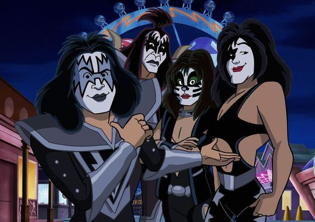

Загальна інформація
| Назва | KISS |
|---|---|
| Рік заснування | 1973 |
| Місто | Нью-Йорк, США |
| Жанр | Хард-рок, глем-рок, хеві-метал |
| Роки активності | 1973 — 2023 (останній концерт 2 грудня 2023 року в Медісон-сквер-гарден) |
| Особливість | Сценічний грим, костюми та видовищні шоу з вогнем і піротехнікою |
Склад гурту
Засновники
- Пол Стенлі — вокал, ритм-гітара
- Джин Сіммонс — вокал, бас-гітара
- Ейс Фрейлі — соло-гітара (1951 — 2025)
- Пітер Кріс — ударні, вокал
Останній склад
- Пол Стенлі — вокал, ритм-гітара
- Джин Сіммонс — вокал, бас-гітара
- Томмі Теєр — соло-гітара (з 2002 року)
- Ерік Сінгер — ударні
Біографія
Гурт KISS заснували в Нью-Йорку на початку 1973 року Пол Стенлі та Джин Сіммонс, до яких згодом приєдналися гітарист Ейс Фрейлі та барабанщик Пітер Кріс. Кожен учасник мав власний сценічний образ із гримом: Зоряне Дитя, Демон, Космонавт та Кіт.
Справжній успіх прийшов у 1975 році після концертного альбому Alive!. У 1983 році музиканти вперше вийшли на сцену без гриму, а в 1996 році оригінальний склад возз'єднався для великого світового туру.
У 2014 році гурт було включено до Зали слави рок-н-ролу. Прощальний тур End of the Road завершився 2 грудня 2023 року в Нью-Йорку — у місті, де KISS колись починали свій шлях.
Основні альбоми
- Kiss — 1974
- Dressed to Kill — 1975
- Alive! — 1975
- Destroyer — 1976
- Love Gun — 1977
- Creatures of the Night — 1982
- Lick It Up — 1983
- Revenge — 1992
- Monster — 2012
Найвідоміші пісні
- Rock and Roll All Nite
- Detroit Rock City
- I Was Made for Lovin' You
- Beth
- Shout It Out Loud
- Crazy Crazy Nights
Досягнення
- Член Зали слави рок-н-ролу (2014)
- Десятки «золотих» альбомів у США
- Понад 100 мільйонів проданих платівок у світі (за даними гурту)
- Власна армія фанатів — KISS Army